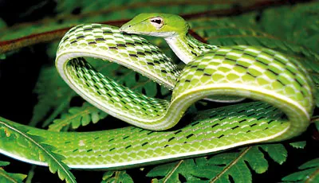
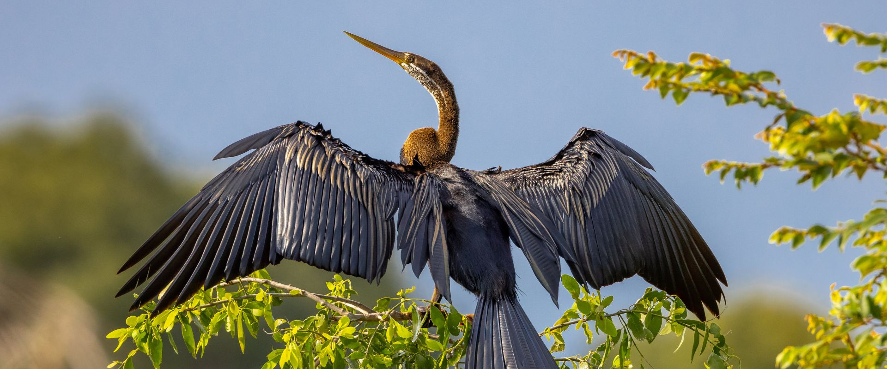
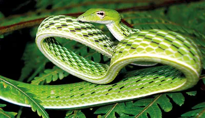
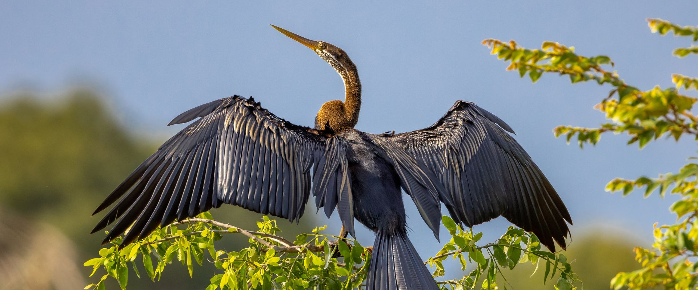

Important Facts About Endemic Animals in Sri Lanka
Endemic animals in Sri Lanka are species that are found exclusively within the geographical boundaries of the country. These organisms have evolved over time in isolation, adapting to the specific environmental conditions of Sri Lanka. Being endemic highlights their unique presence in the region, often making them a focus of conservation efforts. These species may include a variety of wildlife, such as mammals, birds, reptiles, amphibians, and insects, among others. Notable examples of endemic animals in Sri Lanka include the Sri Lankan Elephant, the Purple-faced Langur, the Toque Macaque, and various species of frogs and lizards. Conservation of endemic species is crucial because they often face specific threats related to habitat loss, human-wildlife conflict, and climate change. Preserving their unique habitats and implementing conservation measures are essential to ensuring the survival of these species and maintaining the ecological balance in Sri Lanka.
 





National Parks In Sri Lanka With High Bio Diversity
Two prominent national parks to see wildlife in Sri Lanka given Below